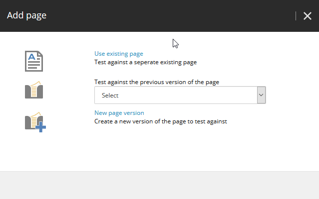

ページテストの作成と実行¶
ページテストはコンテンツテストとは異なります: ページテストは、完全なページを別のページに対してテストします。テストのページは、同じページの異なるバージョンであったり、全く異なるページであったりします。
ページテストはエクスペリエンス最適化アプリケーションで設定することができ、エクスペリエンスエディタからページテストを開始することもできます。
テストするページを選択¶
テストするページを選択するには
エクスペリエンス最適化で、[ページテストの作成] をクリックします。
テストする元のページを選択します。コンテンツ ツリー内のページに移動することも、検索することもできます。
言語 フィールドをクリックしてドロップダウン メニューを開き、テストする言語のバリアントをクリックします。
[選択] をクリックします。
プラス アイコンをクリックして、テスト対象のページを選択します。
{kind=link}
ページの追加ダイアログでは、以下のオプションがあります。

[既存のページを使用] をクリックして、テスト対象の別の既存のページを選択します。
[既存のページを使用する] をクリックして、テストする別の既存のページを選択します。
新しいページのバージョンを作成するには、[新しいページのバージョン] をクリックします。テストを開始する前に、新しいバージョンを編集することができます。
{kind=link}
お互いにテストしたいすべてのページが選択されるまで、再度プラスアイコンをクリックして、より多くのページを選択します。
選択したページのレビュー¶
テストしたいページを選択したら、Review をクリックして、テストのレビューを開始します。Sitecore にはテストに関する情報が表示され、テストのために多くのパラメータを調整することができます。
Sitecore は、テストに含めたページのプレビューを表示します。1つのページが選択され、そのページの大きな画像と詳細が表示されます。別のページを選択するには、そのページの小さな画像をクリックします。
次のような情報が表示されます。
勝者を宣言するまでにテストがどのくらいの期間実行されると予想されるかを示す情報バー
{kind=link}
現在選択されているページの情報
テストのまとめ
以下のパラメータを調整します。
変更による私の予想される効果。変更がページのエンゲージメントバリューに与える影響を推測してみましょう。 複数のページがあるテストでは、すべてのページを元のページと比較して推測することになります。 Sitecore はスコアを計算して、あなたがどれだけ推測に長けているかを示します。
テストに晒された訪問者の割合。テストに晒される訪問者の割合を指定します。 例えば、パーセンテージを40%に設定した場合、訪問者の40%はあなたが作成したバリエーションの1つを見ることになります。オリジナルのバリエーションはこれらの一部です。残りの訪問者 - この例では60% - はオリジナルのバリエーションを見ることになります。 Sitecoreは、テストに公開した訪問者に基づいてテスト結果を計算します。
統計。勝者を宣言する前に、テストが到達しなければならない統計的信頼度を選択します。90%、95%、99%のいずれかを選択できます。レベルが高いほど、テストの実行時間は長くなります。
テスト目的。テスト目的を選択します。マーケティング コントロール センターで指定された目標のいずれかを選択するか、追跡値/訪問（訪問者がテスト対象のページに遭遇した後に発生したページビューに基づくエンゲージメントバリューをサイト訪問数で割ったもの）を選択します。
勝者の選出方法を選択します。テストの勝者を選択する方法を指定します。
テストの目的に基づいて自動的に勝者を選択する
エンゲージメントの価値を著しく低下させない限り、テストの目的に基づいて自動的に勝者を選択します。
手動で勝者を選択
持続時間。テストの実行時間の最小値と最大値を指定します。
最小：3日、7日、または14日を選択します。
最大：14日、30日、または90日を選択します。
ページを編集する¶
元のページの新しいバージョンを作成した場合や、テストを確認した後にページの1つを変更したい場合は、テストを開始する前にページを編集することができます。ページを編集するためにエクスペリエンス最適化を終了する前に、ページのテストを下書きとして保存します。
下書きのテストを保存してページを編集するには
[保存] をクリックしてテストを保存します。
エクスペリエンス エディタまたはコンテンツ エディタに移動し、ページを編集します。変更を保存し、ワークフローでページを移動します。
エクスペリエンス最適化で、ページ テストの下書きをクリックします。先ほど作成したページテストをクリックします。
これで、テストのレビューを続けるか、テストを開始することができます。
テスト結果を見る¶
テストで勝者が見つかったら、テスト結果を見ることができます。テストの概要だけでなく、テストの概要も見ることができます。
最高のページ効果、統計的信頼度、および得られたスコアを示す概要。
テストの異なるページのエンゲージメントバリューを示す棒グラフ。
選択したゴールに基づくコンバージョン率。
テスト結果を確認するには
エクスペリエンス最適化で、テストセクションを展開し、履歴テストをクリックします。
履歴テストのリストで、関連する行をクリックします。
テストの概要パネルには、テストがいつ作成されたか、テストの目的は何かなどの情報が表示されます。
[レポート] ウィンドウには、エクスペリエンス エディタの [テスト結果] ダイアログ ボックスに表示される情報と同じ情報が表示されます。表示されるテスト結果データの詳細については、「 コンテンツ テスト結果 」のトピックを参照してください。